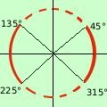
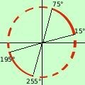
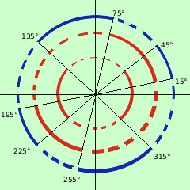

esercizio
Risolvere la disequazione
sen 4x > cos 2x
il primo angolo e' 4x, il secondo e' 2x riduciamo tutto a 2x
(formule di duplicazione)
2 sen 2x cos 2x > cos 2x
portiamo tutto prima dell'uguale
2 sen 2x cos 2x - cos 2x > 0
Raccogliamo cos 2x a fattor comune
cos 2x (2 sen 2x - 1) > 0
E' un prodotto: sara' maggiore di zero quando i fattori avranno segno concorde (cioe' quando entrambe i fattori sono positivi oppure sono entrambe negativi)
Pongo in un sistema entrambe i fattori maggiori di zero e trovo gli intervalli dove i segni sono concordi
un piccolo ripasso
 cos 2x > 0
cos 2x > 0
2 sen 2x - 1 > 0
- risolvo la prima
cos 2x > 0
so che il coseno e' positivo tra 0° e 90° ed anche tra 270° e 360°, quindi
0° < 2x < 90° U 270° < 2x < 360°
con U indico l'unione degli intervalli
pero' io cerco l'angolo x e quindi dividiamo per 2
0° < x < 45° U 135° < x < 180°

inoltre siccome dividendo per 2 ottengo che ho la periodicita' di 180° dovro' anche considerare
180° < x < 225° U 315° < x < 360°
Mettendo assieme
0° < x < 45° U 135° < x < 225° U 315° < x < 360°
a destra la rappresentazione grafica
- risolvo la seconda
2 sen 2x - 1 > 0
ricavo sen 2x
2 sen 2x > 1
sen 2x > 1/2
so che il seno e' superiore ad 1/2 per gli angoli tra 30° e 150° quindi posso scrivere
30° < 2x <+ 150
pero' io cerco l'angolo x e quindi dividiamo per 2
15° < x < 75°

inoltre siccome dividendo per 2 ottengo che ho la periodicita' di 180° dovro' anche considerare
195° < x < 255°
Mettendo assieme
15° < x < 75° U 195° < x < 255°

Ora cerco le soluzioni concordi della prima e della seconda disequazione: riporto all'interno i due grafici trovati
Indico in blu a linea continua dove sono concordi, in blu a linea tratteggiata dove sono discordi
Raccogliendo ho quindi le soluzioni
15°<x <45° U 75°<x <135° U 195°<x<225° U 255°<x<315°
|